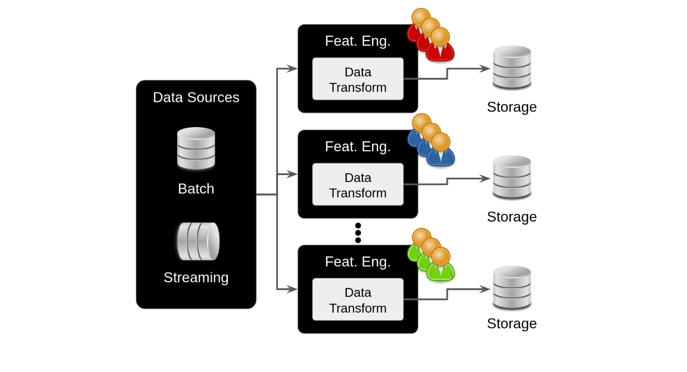
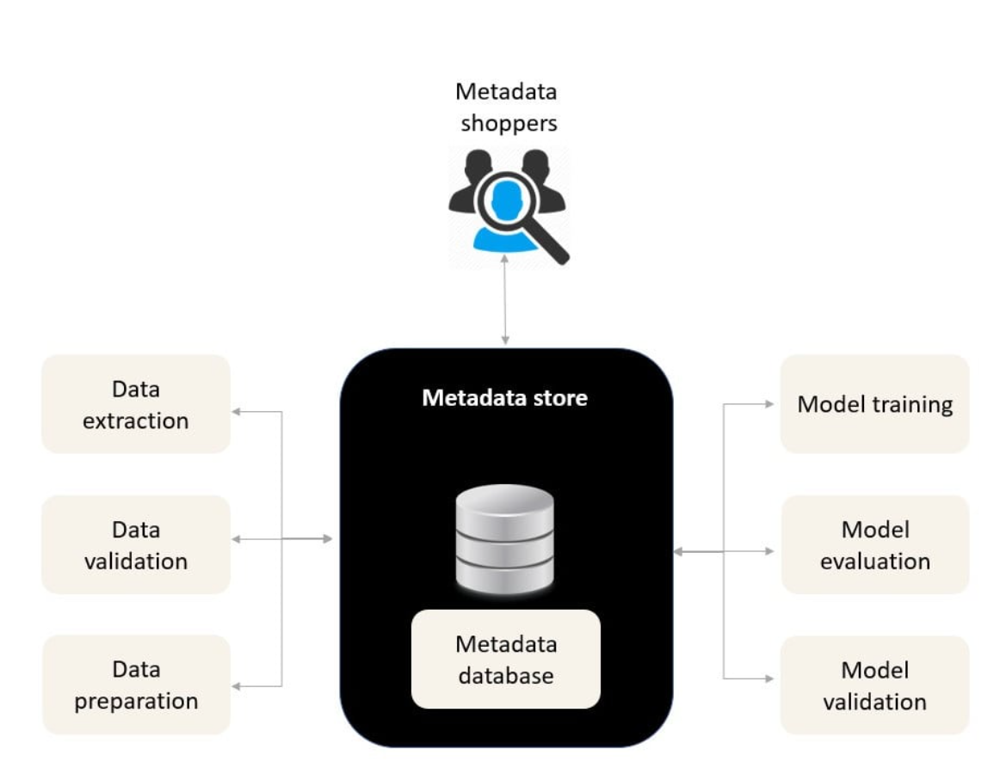
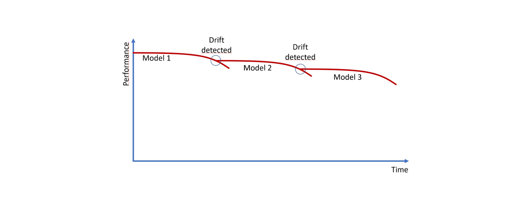
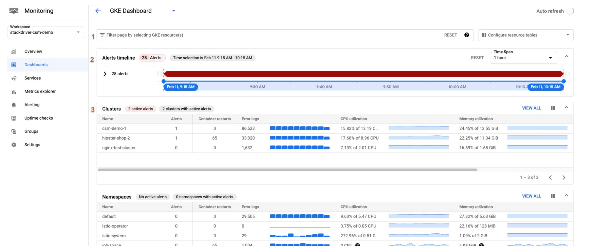
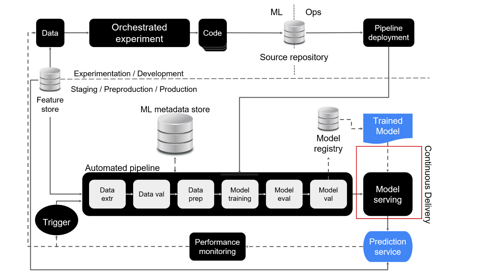
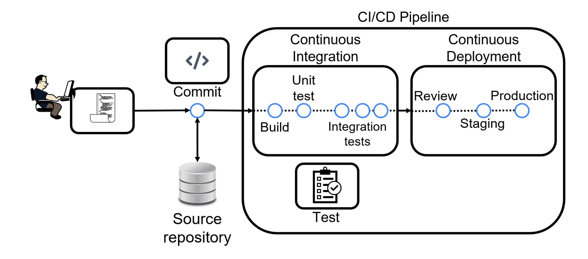
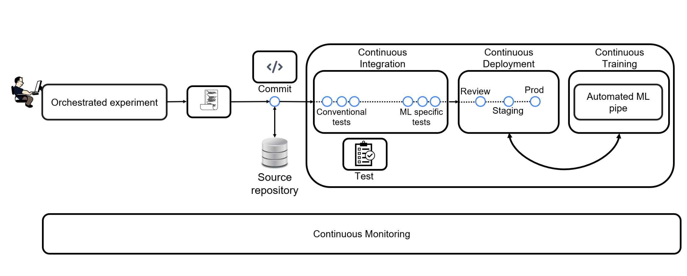
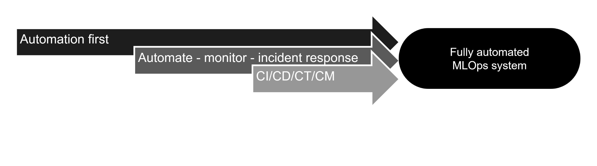

MLOps: A Must-Have Skill for Efficient Model Management and Deployment
By Yangming Li
As machine learning (ML) technologies continue to mature, a central concern for many organizations is how to deploy models to production efficiently and ensure they are maintained seamlessly. This is where MLOps, or Machine Learning Operations, comes into play. MLOps combines the principles of traditional DevOps with the unique needs of machine learning, aiming to improve the efficiency of model development, deployment, and monitoring through automation and collaboration.
What is MLOps?
MLOps is a systematic framework that covers a series of steps from data management and model development to deployment and continuous monitoring. The goal is to accelerate model deployment through automated, standardized processes, ensuring that models perform consistently in production.
Key Aspects of MLOps
- Data Management: Ensures data version control and consistency
- Model Training and Evaluation: Supports automated model selection and performance tuning
- Model Deployment: Automates model deployment through CI/CD pipelines
- Model Monitoring: Continuously tracks model performance to detect issues like model drift
Why is MLOps Important?
- Accelerates Model Deployment: MLOps significantly reduces the time from model development to deployment, enabling organizations to respond quickly to market changes.
- Improves Collaboration: A unified platform allows data scientists and development teams to collaborate more effectively, reducing duplicated efforts.
- Continuous Monitoring and Improvement: MLOps enables models to be automatically monitored post-deployment. When model performance degrades, it can trigger retraining, ensuring the model consistently performs at its best.
MLOps Example: Building a Simple ML Pipeline
Below is an example of how to create and manage an ML pipeline using both MLflow and Weights & Biases (W&B), two popular tools in MLOps. MLflow is used for tracking and managing model versions and deployments, while Weights & Biases helps visualize and monitor metrics in real time.
import mlflow
import mlflow.sklearn
import wandb # Weights & Biases library
from sklearn.datasets import load_iris
from sklearn.ensemble import RandomForestClassifier
from sklearn.model_selection import train_test_split
from sklearn.metrics import accuracy_score
# Initialize Weights & Biases project
wandb.init(project="mlops_example", name="random_forest_run")
# Load the dataset
iris = load_iris()
X_train, X_test, y_train, y_test = train_test_split(
iris.data, iris.target, test_size=0.2, random_state=42
)
# Start tracking the experiment with MLflow
with mlflow.start_run():
# Train the Random Forest model
clf = RandomForestClassifier(n_estimators=100, random_state=42)
clf.fit(X_train, y_train)
# Predict and evaluate the model
predictions = clf.predict(X_test)
acc = accuracy_score(y_test, predictions)
print(f"Model Accuracy: {acc}")
# Log the model and metrics with MLflow
mlflow.log_metric("accuracy", acc)
mlflow.sklearn.log_model(clf, "random_forest_model")
# Log metrics and parameters with Weights & Biases
wandb.log({"accuracy": acc, "n_estimators": 100})
Code Explanation
- MLflow: Manages the ML experiment and model deployment, allowing you to track performance across experiments and deploy the best-performing model.
- Weights & Biases (W&B): Logs metrics like accuracy and parameters in real time, enabling interactive visualizations of model performance and hyperparameter tuning.
Key MLOps Tools
- MLflow: An open-source platform for managing the ML lifecycle, including experiment tracking, model management, and deployment.
- Weights & Biases: A powerful tool for tracking, visualizing, and collaborating on ML experiments. It provides interactive dashboards and helps data scientists monitor training metrics and hyperparameters.
- Kedro: A data science project management framework that helps build modular and reproducible ML code.
- Kubeflow: Automates ML workflows on Kubernetes, supporting the entire lifecycle from model training to deployment.
MLOps Reference Architecture
A reference architecture serves as a blueprint for designing ML systems, incorporating industry best practices and proven patterns. By following a reference architecture, organizations can build scalable, maintainable ML solutions using consistent and repeatable approaches.
Understanding Reference Architecture
A reference architecture is more than just a diagram - it's a comprehensive blueprint used to design IT solutions, particularly ML systems. It provides structured approaches for integrating various IT elements and patterns commonly used in solution design. By adopting such architecture, organizations can:
- Leverage industry best practices
- Streamline development processes
- Minimize technical debt
- Ensure scalability and maintainability

Detailed Component Breakdown
1. Development Environment
The journey begins in the experiment/development environment where data scientists execute orchestrated ML experiments. This environment includes:
- Orchestrated ML experiments for systematic model development
- Source code management and version control
- Integration with development tools and notebooks
2. CI/CD Pipeline Implementation
The CI/CD pipeline forms the backbone of automated MLOps:
- Continuous Integration (CI):
- Automated code testing and validation
- Creation of deployable artifacts
- Package and executable generation
- Continuous Delivery (CD):
- Automated deployment to production
- Pipeline deployment automation
- Model deployment orchestration
3. Feature Store
The feature store is a critical component that:
- Provides consistent feature serving across development and production
- Enables feature reuse and reproducibility
- Maintains feature versioning and compatibility
- Feeds data to both development experiments and production services
4. Model Management
Comprehensive model management includes:
- Metadata Store:
- Records pipeline execution logs
- Stores training artifacts and hyperparameters
- Maintains experiment tracking information
- Model Registry:
- Centralized model version control
- Model artifact storage and management
- Model lineage tracking
5. Automated Operations
The automation aspect includes:
- Continuous Monitoring:
- Real-time performance tracking
- Statistical analysis of predictions
- Data drift detection
- Automated Triggers:
- Performance-based pipeline activation
- Scheduled retraining mechanisms
- Data-driven trigger systems
- Model Retraining:
- Automated training pipeline execution
- Fallback mechanism implementation
- Backup model management
Implementation Considerations
When implementing this reference architecture, organizations should:
- Start with essential components and gradually expand
- Ensure robust testing at each automation stage
- Maintain clear documentation and monitoring practices
- Consider scalability requirements from the beginning
Automated Experiment Tracking in MLOps
Machine Learning is inherently experimental in nature, with data scientists and ML engineers constantly tweaking various aspects of their ML pipelines to find optimal solutions. This experimental nature creates a need for robust tracking systems.
Why Automated Experiment Tracking?
Manual tracking becomes impractical due to:
- Multiple data transformations and algorithms to test
- Various model evaluation metrics
- Different hyperparameter combinations
- Need for reproducibility and transparency
What Should Be Tracked?
- Code and Configuration:
- Experiment generation code
- Environment configuration files
- Runtime specifications
- Data Specifications:
- Data sources and types
- Data formats
- Cleaning procedures
- Augmentation methods
- Model Information:
- Model parameters
- Hyperparameters
- Evaluation metrics
Benefits of Automated Tracking
- Reproducibility: Ensures experiments can be replicated accurately
- Performance Monitoring: Enables systematic tracking of system performance
- Result Comparison: Facilitates easy comparison between different model versions
- Decision Support: Provides data-driven insights for improvement
- Transparency: Allows others to understand and validate the process
Modern Experiment Tracking Systems
Contemporary tracking systems offer:
- Interactive dashboards for visualization
- Programmatic access to tracking data
- Model registry integration
- Automated metadata organization
- Run comparison capabilities
Market Solutions
While custom tracking solutions can be developed, several market options exist:
- Open-source Solutions:
- MLflow
- DVC (Data Version Control)
- Sacred
- Commercial Solutions:
- Weights & Biases
- Neptune.ai
- Comet.ml
The Model Registry: Managing ML Model Lifecycle
The model registry is a crucial component in MLOps architecture that serves as a centralized repository for managing the entire lifecycle of machine learning models, from creation to archiving.

Understanding Model Lifecycle Management
Models transition through different environments in their lifecycle:
- Development: Where models are created and initially tested
- Staging: Where models undergo validation and integration testing
- Production: Where models are deployed for actual use
Moving Beyond "Over the Fence" Deployment
Traditional model deployment often involves a data scientist simply "throwing the model over the fence" to operations teams through:
- Email attachments
- USB drives
- Shared network drives
This approach lacks proper versioning, tracking, and automation capabilities.
Core Functions of the Model Registry
- Centralized Storage:
- Model artifacts
- Deployment configurations
- Model dependencies
- Lifecycle Management:
- Version control
- Environment transitions
- Deployment history
- Model archiving
- Integration Capabilities:
- CI/CD workflow integration
- Automated testing triggers
- Deployment automation
Model Registration Process
- Experimentation Phase:
- Multiple iterations tracked by experiment tracking system
- Metadata stored in metadata store
- Model Selection:
- Best performing model identified
- Model promoted to registry
- Validation:
- Automated testing in staging environment
- Integration verification
- Deployment:
- CD pipeline triggered
- Prediction services updated
- Archival:
- Previous model decommissioned
- Model history maintained
Design Flexibility
The model registry can be implemented in different ways:
- Separated System: Model registry focuses solely on model storage and lifecycle management, while experiment tracking and metadata storage are handled separately.
- Unified System: Model registry includes experiment tracking and metadata storage capabilities in a single platform.
Feature Store: The Cornerstone of Enterprise ML
A feature store serves as a centralized repository for standardizing the definition, storage, and access of features across all stages of the ML lifecycle - from experimentation to production serving.
Understanding Feature Engineering
Feature engineering involves transforming raw data into meaningful inputs for ML algorithms through:
- Numerical transformations (standardization, normalization)
- Categorical variable encoding
- Domain-specific feature creation
- Value grouping and aggregation
Enterprise Challenges Without Feature Store
Organizations often face these issues:
- Duplicate feature engineering efforts across teams
- Inconsistent feature definitions
- Redundant storage infrastructure
- Limited feature discovery and reuse
- Data skew between training and serving
Feature Store Capabilities
- Data Integration:
- Ingests raw data from multiple sources
- Handles both batch and streaming data
- Standardizes transformation processes
- Storage and Serving:
- Centralized feature storage
- High-throughput batch serving
- Low-latency real-time serving
- API access for various use cases
- Metadata Management:
- Feature versioning
- Data lineage tracking
- Feature documentation
Key Benefits
- Accelerated Experimentation:
- Quick access to curated feature sets
- Feature discovery and reuse
- Consistent feature definitions
- Continuous Training:
- Automated feature updates
- Consistent training datasets
- Version-controlled features
- Production Serving:
- Batch and real-time prediction support
- Environment symmetry
- Prevention of data skew
Environment Symmetry
The feature store ensures environment symmetry by:
- Providing identical feature computation across all environments
- Maintaining consistent feature definitions from development to production
- Preventing data skew between training and serving
- Centralizing feature access for all ML pipeline stages
The Metadata Store: Enabling Automated MLOps Workflows
The metadata store serves as a centralized repository for managing all information about artifacts created during the execution of ML pipelines, playing a crucial role in enabling fully automated MLOps workflows.
Understanding MLOps Metadata
Metadata includes information about:
- Data source versions and modifications
- Model hyperparameters and versions
- Training evaluation results
- Pipeline execution logs
- Hardware utilization metrics
Key Aspects of ML Metadata
Model Drift Detection and Automated Response
The metadata store enables automatic monitoring of MLOps pipelines and facilitates automated incident response. When the system detects model drift, it can automatically trigger model retraining. Continuous monitoring of evaluation metrics allows the system to detect performance decay, prompting automated responses:
- Automatic detection of model drift through continuous metric monitoring
- Automated model retraining when performance decay is detected
- Automated rollback capabilities to previous stable versions
- System continuity maintenance during root cause analysis
Monitoring Tools
Enables tracking of pipeline execution status and system health
Metadata Store Functions
- Centralized Management:
- Experiment logs
- Artifact metadata
- Model information
- Pipeline execution data
- Integration Capabilities:
- User interface for metadata access
- API for automated logging
- Pipeline component interaction
Automation Benefits
- Automated Monitoring:
- Continuous performance tracking
- Automatic incident response
- Model drift detection
- Automated Recovery:
- Automated model retraining triggers
- Automatic rollback capabilities
- System resilience
Reproducibility and Trust
The metadata store enables:
- Experiment reproduction for validation
- Scientific rigor in ML processes
- Transparent decision tracking
- Root cause analysis capabilities
MLOps Automation Maturity Levels
The level of automation in an ML system determines its maturity. Organizations typically progress through three distinct levels of automation: manual, semi-automated, and fully automated workflows.
1. Manual ML Workflow

Most teams begin their ML journey with a manual workflow, characterized by:
- Ad-hoc experimentation without systematic tracking
- Limited reproducibility
- Manual handover from Development to Operations
- No automated pipeline orchestration
2. Semi-automated ML Workflow
Semi-automated workflows introduce several improvements:
- Orchestrated ML experiments
- Source code version control
- Feature store implementation
- Automated ML pipeline execution
- Metadata storage
- Model registry integration
- Continuous delivery of prediction services
- Continuous monitoring
3. Fully Automated ML Workflow

A fully automated MLOps system represents the highest level of maturity:
- Complete pipeline automation
- Continuous delivery of ML pipelines
- Automated model deployment
- Streamlined end-to-end workflow
Automation Across ML Lifecycle Phases
Design Phase
- Cannot be fully automated
- Requires stakeholder input
- Uses reproducible processes
- Emphasizes thorough documentation
Development Phase
- Clean code practices
- Version control
- Automated data preprocessing
- Automated model selection
- Automated hyperparameter tuning
Operations Phase
- Automated testing
- Continuous Integration
- Continuous Deployment
- Continuous Training
- Continuous Monitoring
The Automation, Monitoring, and Incident Response Pattern
Understanding Design Patterns in MLOps
A design pattern represents a reusable solution to common recurring problems in software development. In MLOps, these patterns provide standardized approaches to address challenges in ML system development and maintenance.
Key Implementation Examples
1. Automated Model Retraining
- Continuous monitoring of prediction service performance
- Automatic trigger activation when performance drops below threshold
- Automated pipeline execution with feature store data
- Model registry update
- Automated deployment of updated model
2. Model Rollback Mechanism
- Detection of validation failures or poor performance
- Automatic rollback to last known good model
- Rapid redeployment of stable version
- Continuous system availability maintenance
3. Feature Imputation
Data Quality Monitoring:
- Continuous monitoring of feature quality
- Threshold-based quality alerts (e.g., >30% missing data)
Automated Responses:
- Numerical Features:
- Mean/median imputation
- KNN imputation
- Categorical Features:
- Frequent category imputation
- Missing category addition
Automated Hyperparameter Tuning
Understanding Hyperparameters
Hyperparameters are tunable values in ML models that are set prior to training and cannot be learned from data. Unlike model parameters (weights and biases), hyperparameters must be configured before the training process begins.
Common Hyperparameters:
- Neural network architecture
- Decision tree depth
- Learning rate
- Number of layers/neurons
Tuning Methods
Grid Search
Evaluates all combinations in a predefined parameter grid
Random Search
Evaluates random combinations from parameter space
Bayesian Search
Uses probabilistic model to select most promising parameters
Automated Tuning Process
-
Parameter Specification
Define which hyperparameters to tune
-
Search Space Definition
Set discrete values or ranges for each parameter
-
Metric Selection
Choose performance metrics to optimize (e.g., recall, precision)
-
Stopping Criteria
Define when to stop the search (e.g., number of trials)
Best Practices
Environment Symmetry
Maintain consistent hyperparameters across dev, stage, and prod environments
Experiment Tracking
Automate logging of hyperparameter experiments in metadata store
Visualization
Use automated tracking solutions to visualize hyperparameter effects on model performance
Key Benefits
- Eliminates manual trial and error
- Systematically explores parameter space
- Improves model performance
- Ensures reproducibility
- Facilitates experiment comparison
Automated Testing in MLOps
Beyond Traditional Software Testing
While ML systems are software systems, their testing requirements differ fundamentally from traditional applications. ML system behavior is learned from training data rather than explicitly coded, making testing more complex and multifaceted.
Traditional Software Tests
- Unit tests (individual components)
- Integration tests (component interactions)
- End-to-end tests (complete system functionality)
Data Testing
- Feature Validation:
- Range checks (deterministic tests)
- Distribution analysis (statistical tests)
- Feature importance evaluation
- Data Quality:
- Privacy controls verification
- Legal compliance checks
- Data consistency validation
Model Testing
- Performance Validation:
- End-user satisfaction metrics
- Statistical performance measures
- Hyperparameter optimization verification
- Model Health:
- Overfitting detection
- Staleness assessment
- Baseline model comparisons
Pipeline Testing
- Workflow Validation:
- End-to-end reproducibility
- Component integration tests
- Step-by-step debugging capability
- System Integration:
- Data pipeline validation
- Model pipeline validation
- Infrastructure testing
Testing Best Practices
- Implement automated testing at all stages of the ML pipeline
- Maintain comprehensive test coverage across data, models, and infrastructure
- Regular validation against baseline models
- Continuous monitoring of model performance in production
- Documentation of test cases and results
CI/CD/CT/CM: The Pillars of Fully Automated MLOps
From DevOps to MLOps
While DevOps emphasizes collaboration between development and operations through automation, MLOps extends these principles to address the unique challenges of machine learning systems.
The CI/CD Pipeline in MLOps
Traditional CI/CD practices are enhanced in MLOps to include ML-specific requirements:
- Integration of multiple developers' work into a single repository
- Automated testing including ML-specific tests
- Continuous deployment of models and pipelines
- Version control for both code and models
MLOps-Specific Extensions
Continuous Training (CT)
- Automated model retraining
- Schedule-based or event-triggered updates
- Performance decay management
- Data drift adaptation
Continuous Monitoring (CM)
- Data quality monitoring
- Model performance tracking
- System health checks
- Drift detection
Benefits of Full Automation
- Faster Development: Streamlined integration and deployment processes
- Reduced Errors: Automated testing and validation
- Improved Quality: Consistent monitoring and maintenance
- Quick Updates: Rapid response to performance degradation
- Scalability: Efficient handling of growing data and model complexity
Implementation Considerations
- Think "automation first" throughout the ML lifecycle
- Implement comprehensive testing strategies
- Establish clear triggers for model retraining
- Define monitoring thresholds and alerts
- Maintain environment consistency across stages
Deployment Progression and Testing Strategy
Testing Before Production
Before deploying ML services to end-users, thorough testing across different environments is crucial. This testing focuses on the application infrastructure rather than model performance, including database communication, user authentication, and logging systems.
Development Environments
Development (Dev)
- Experimental environment
- Constantly changing
- Used for active development
Test
- Stable, dedicated environment
- Used for unit testing
- Isolated from development changes
Staging
- Mirror of production environment
- Identical software versions
- Representative data subset
Production
- Live environment
- Real user traffic
- Production data
Testing Progression
-
Unit Testing
Testing individual code components and functions
- Simple and fast execution
- Run in Test environment
- Validates basic functionality
-
Integration Testing
Testing component interactions and external services
- Database connectivity
- API communications
- Run in Staging environment
-
Smoke Testing
Basic deployment validation
- Application startup
- Basic functionality check
- Critical path testing
-
Load and Stress Testing
Performance under various conditions
- Normal load testing
- Extreme condition testing
- Performance benchmarking
-
User Acceptance Testing (UAT)
Final validation with end users
- Real user testing
- Functionality verification
- Final approval gate
Testing Best Practices
- Prioritize testing of critical components
- Maintain environment consistency
- Automate testing processes where possible
- Document test cases and results
- Regular testing schedule
- Clear criteria for passing/failing tests
Remember
A single weak link can compromise the entire system. While comprehensive testing is important, focus on critical components first and maintain a balanced approach to testing coverage.
Model Deployment Strategies
Beyond Simple Model Swapping
While simply swapping models might work for offline batch predictions, real-time services require more sophisticated deployment strategies to minimize downtime and risk.
Offline Deployment
Best for:
- Batch prediction services
- Non-time-critical applications
- Systems with maintenance windows
Simple but requires service interruption
Blue/Green Deployment
Process:
- Load new model alongside old one
- Instant switch between versions
- Quick rollback capability
Advantages
- Simple implementation
- Zero downtime
- Quick switching
Disadvantages
- All-or-nothing switch
- Higher risk on switch
Canary Deployment
Process:
- Gradual traffic migration
- Start with small percentage
- Incrementally increase traffic
- Monitor performance at each step
Safer but more complex to manage
Shadow Deployment
Process:
- Parallel model execution
- Old model serves responses
- New model predictions logged
- Compare performance offline
Advantages
- Zero risk to users
- Real-world validation
Disadvantages
- Resource intensive
- Higher operational costs
Can be optimized by:
- Sampling requests for shadow model
- Running during off-peak hours
Deployment Best Practices
- Choose strategy based on service requirements
- Implement robust monitoring
- Prepare rollback procedures
- Document deployment processes
- Test deployment procedures in staging
Conclusion
The introduction of MLOps greatly improves the model management process in production environments. By automating deployment and continuous monitoring, MLOps ensures model stability and performance. This not only enhances team collaboration but also ensures that models continuously meet business needs. As more companies adopt MLOps, the future of ML development will become more efficient and automated.
Using tools like MLflow and Weights & Biases together provides comprehensive tracking, management, and visualization, making MLOps workflows robust and adaptable for scalable ML solutions.